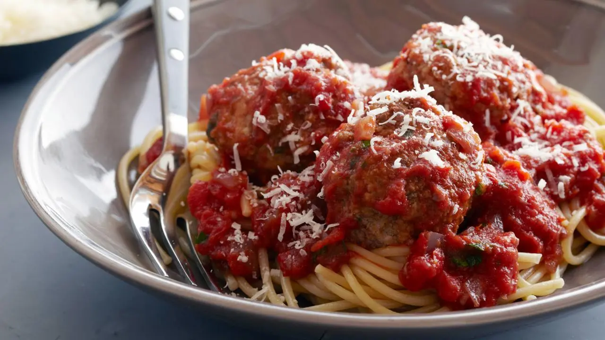

Source of Info
Real Meatballs and Spaghetti:

Ingredients:
- Meatballs:
- 1/2 pound ground veal
- 1/2 pound ground pork
- 1 pound ground beef
- 1 cup fresh white bread crumbs (4 slices, crusts removed)
- 1/4 cup seasoned dry bread crumbs
- 2 tablespoons chopped fresh flat-leaf parsley
- 1/2 cup freshly grated Parmesan cheese
- 2 teaspoons kosher salt
- 1/2 teaspoon freshly ground black pepper
- 1/4 teaspoon ground nutmeg
- 1 extra-large egg, beaten
- Vegetable oil
- Olive oil
- Sauce:
- 1 tablespoon good olive oil
- 1 cup chopped yellow onion (1 onion)
- 1 1/2 teaspoons minced garlic
- 1/2 cup good red wine, such as Chianti
- 1 (28-ounce) can crushed tomatoes, or plum tomatoes in puree, chopped
- 1 tablespoon chopped fresh flat-leaf parsley
- 1 1/2 teaspoons kosher salt
- 1/2 teaspoon freshly ground black pepper
- Serving:
- 1 1/2 pounds spaghetti, cooked according to package directions
- Freshly grated Parmesan
How to make:
-
Place the ground meats, both bread crumbs, parsley, Parmesan, salt, pepper, nutmeg, egg, and 3/4 cup
warm water in a bowl. Combine very lightly with a fork. Using your hands, lightly form the mixture
into 2-inch meatballs. You will have 14 to 16 meatballs.
-
Pour equal amounts of vegetable oil and olive oil into a large (12-inch) skillet to a depth of
1/4-inch. Heat the oil. Very carefully, in batches, place the meatballs in the oil and brown them
well on all sides over medium-low heat, turning carefully with a spatula or a fork. This should take
about 10 minutes for each batch. Don't crowd the meatballs. Remove the meatballs to a plate covered
with paper towels. Discard the oil but don't clean the pan.
-
For the sauce, heat the olive oil in the same pan. Add the onion and saute over medium heat until
translucent, 5 to 10 minutes. Add the garlic and cook for 1 more minute. Add the wine and cook on
high heat, scraping up all the brown bits in the pan, until almost all the liquid evaporates, about
3 minutes. Stir in the tomatoes, parsley, salt, and pepper.
-
Return the meatballs to the sauce, cover, and simmer on the lowest heat for 25 to 30 minutes, until
the meatballs are cooked through. Serve hot on cooked spaghetti and pass the grated Parmesan.